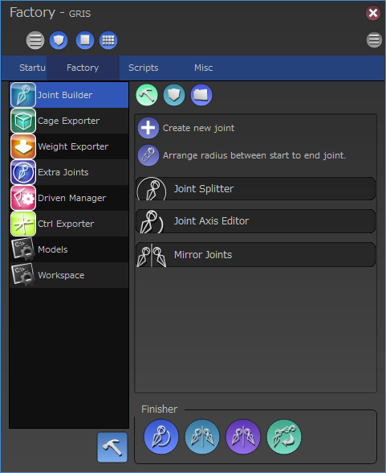

ScriptBasedRigging-概要¶
スクリプトベースによるリギングとは、リグ作成に必用な要素を予め用意しておき、それらバラバラな要素をスクリプトによって組み立てていく（ビルド）手法です。
必用な要素はリギングする対象によって色々変わる場合もありますが、基本的に以下のような要素が一般的です。
モデル
ボーン
スキニングのウェイト
ケージ
ドリブンキー
などなど
このような要素を予め書き出しておき、その後ビルド用スクリプトを実行する事によってリグを作成します。
ビルド用スクリプトにはファイルを読み込む順番や、ボーンにコントローラを追加する、ウェイトを適用する、など様々な手順が書かれており、その手順に従ってリグを組み立てていきます。
メリット・デメリット¶
スクリプトベースのビルドには以下のようなメリットがあります。
ボーンの位置調整などが簡単に行える。
モデルに微調整があった場合の更新が容易。
規格が決まっているプロジェクトなどでは、複数のアセットへの移植が簡単にできる。
各要素はシンプルなデータが多いため、データのクリーンナップが容易。
バリエーション違いが作りやすく、メンテナンスも容易。
逆に以下のようなデメリットもあります。
最初の作成に時間がかかるりやすい。
手作りのリグに比べてかなり高いスキルが要求される。特にスクリプトの知識が前提となるため、スクリプトを書けない場合は組織的なバックアップが必用になる。
grisは基本的にスクリプトベースによるリギングを前提にシステムが作られています。以下の章ではgrisにおけるビルドシステムについて説明します。
コンストラクタとファクトリーモジュール¶
スクリプトベースのビルドシステムでは上記のように
要素の書き出し
スクリプトによるビルド
の２本を柱として構成されています。
grisではこの２つの柱をそれぞれ
ファクトリーモジュール
コンストラクタ
というシステムとして提供しています。
ファクトリーモジュールは要素の書き出しを行うためのインターフェースの提供を行います。コンストラクタはファクトリによって書き出された要素を組み立てるためのスクリプトを管理、実行するための仕組みを提供します。
ファクトリーウィンドウ¶
これらコンストラクタとファクトリーモジュールを管理、運用するための専用GUI「ファクトリーウィンドウ」がgrisには用意されています。
{kind=link}
ファクトリーウィンドウは、その名の通りファクトリーが提供する機能をユーザーにインターフェースから操作させるためのGUIを提供します。
また、合わせてコンストラクタの実行や、これら一連のアセットに必用なプロジェクトデータの管理も行うためのインターフェースを提供します。
コンストラクタ(Constructor)¶
概要¶
コンストラクタはスクリプトの実行順序やリギングをスクリプトで行うための補助するメソッドを多数備えたシステムを内包したクラスです。
このクラスを実行すると、記述されている決まった手順に従ってスクリプトを実行していきます。
grisには標準的な機能を持つコンストラクタ「StandardConstructor」がありますが、開発者はコンストラクタをカスタマイズする事によりプロジェクトの運用に沿った手順を実行するカスタムコンストラクタを作ることもできます。
エクストラコンストラクタ(ExtraConstructor)¶
コンストラクタはカスタイズ可能ですが、プロジェクトごとに微妙に違う挙動のコンストラクタを作成するのは非効率な場合があります。また特定の種類のアセットだけ少し違う手順のフローに乗せたい時も、わざわざコンストラクタを別に用意するのは手間がかかってしまいます。
そんな場合はコンストラクタの一部の機能を拡張する事ができる「エクストラコンストラクタ」が有効な場合があります。
エクストラコンストラクタはメインとなるコンストラクタの実行するメソッドの前後に任意の処理を差し込んだり、コンストラクタの持つメソッド自体を強制的に上書きしたりなど、幅広いカスタマイズを行う事ができます。
またエクストラコンストラクタはアセットごとのコンストラクタ内で個別にインストールする設計のため、アセットごとに任意の処理を入れる/入れないを選択できるため、非常に汎用性が高くなっています。
プロジェクトディレクトリ¶
grisのスクリプトベースのビルドには２つの柱がある事を紹介しました。これらを運用するためにはそれぞれの要素を書き出すディレクトリや、コンストラクタを記述したスクリプトを保存するためのディレクトリなど、アセットに関連する一通りのデータを格納する場所が必用になります。
これらのデータをひとまとめにして保存するディレクトリを「プロジェクトディレクトリ」と呼びます。
ファクトリーセッティング(FactorySettings)¶
プロジェクトディレクトリ内にはコンストラクタ用のデータや、各種書き出すファイルなどが混在します。これらのデータを管理、運用するための仕組みが「ファクトリーセッティング」です。
ファクトリーセッティングはコンストラクタとファクトリーモジュールをつなぐためのシステムであり、ファクトリーウィンドウはこのシステムを運用するためのGUIとなっています。
ファクトリーセッティングによって保持されている情報はプロジェクトディレクトリ直下に「grisFactoryWorkspace.xml」というファイルに記述されます。
逆に言うならば、このgrisFactoryWorkspace.xmlが存在するディレクトリが、プロジェクトディレクトリという扱いになります。
FactorySettingsについての詳細はファクトリーセッティングをご覧下さい。